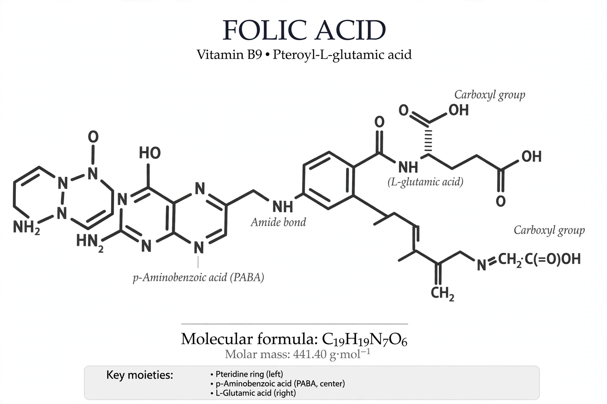

| Folate | |
|---|---|
 | |
| Vitamin | Vitamin B9 |
| Chemical name (folic acid) | Pteroyl-L-glutamic acid |
| Function | One-carbon transfer in DNA synthesis and amino-acid metabolism |
| Sources | Leafy green vegetables, legumes, fortified grains |
| Deficiency | Megaloblastic anemia; neural tube defects in embryos |
Folate is the generic term for vitamin B9 compounds — naturally occurring food folates and folic acid, the synthetic, oxidized form used in supplements and food fortification. The name derives from the Latin folium (leaf), because folate is plentiful in green leafy vegetables. In the body, folate coenzymes (tetrahydrofolate derivatives) carry one-carbon units needed for the synthesis of purines and thymidylate, and thus for DNA replication and cell division, as well as for remethylating homocysteine to methionine.
Because rapidly dividing cells are most dependent on folate, deficiency presents as megaloblastic anemia — large, immature red-blood-cell precursors — and, crucially, as an increased risk of neural tube defects such as spina bifida and anencephaly when it occurs in the first weeks of pregnancy, often before a woman knows she is pregnant. This led the United States and many other countries to mandate folic acid fortification of enriched cereal grains in 1998, after which neural tube defect rates fell by roughly a fifth to a third.
Adults require about 400 µg dietary folate equivalents daily; women who may become pregnant are advised to obtain 400 µg of folic acid from fortified foods or supplements in addition to dietary folate. Excess folic acid can mask the anemia of vitamin B12 deficiency while neurological damage progresses, which is why an upper limit of 1,000 µg/day for supplemental folic acid is set for adults. Folate antagonists such as methotrexate, which inhibit dihydrofolate reductase, are used in cancer chemotherapy and immunosuppression.
See also: Folic acid · Neural tube defect · Vitamin B12